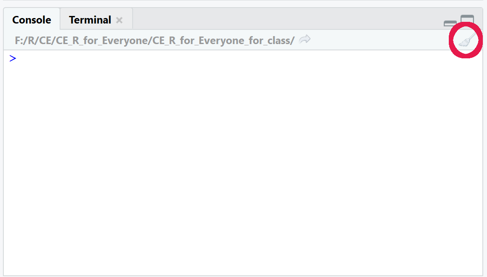

Chapter 10 Handy tips & tricks

Welcome to Chapter 10! This chapter will include coding to reinforce what you have learnt up to this point. There will also be plenty of new handy functions and some more concepts to learn.
For this chapter create a directory called "Chapter_10-11" in your main directory and set it as the working directory. Then create a script called "4-Handy_tips.R". Remember to use annotations (#) and code sections (####)!
I'll first introduce you to some R conventions and then some useful abilities of RStudio.
10.1 R conventions
R conventions are style guides. You do not need to follow them but they are intended to help make code easier to read. There are lots of different suggestions for different parts of R code. Here we will only look at conventions for object/variable names and wide vs long code formatting.
10.1.1 Variable names
Variable names have certain rules that must be followed. We covered these in chapter 2 but below is a reminder:
- Must start with a letter.
- Cannot contain spaces.
- Cannot start with a number.
- Cannot share the same name as a command or function in R.
- They are case sensitive. The variable name
BBis different to the variable namebbwhich is different again tobB.
On top of these rules there are a few naming styles that are recommended. It is very good to choose one naming style and stick with it always. Below are three commonly used naming conventions for R. Look through them and choose your favourite to use.
10.1.1.1 Snake case
Snake case is my preferred naming convention due to my background. It consists of using lower case letters with underscores (_) between words. Numbers can also be used. Below are some examples of names in snake case.
10.1.1.2 Period separated
 Period separated is almost identical to snake case. Just swap the underscores (
Period separated is almost identical to snake case. Just swap the underscores (_) with periods (.). Below are some examples of names in period separated.
10.1.1.3 Camel case
 Camel case has no symbols to separate words. Instead after the first word every word starts with an upper case. Below are some examples of names in Camel Case.
Camel case has no symbols to separate words. Instead after the first word every word starts with an upper case. Below are some examples of names in Camel Case.
There are exceptions when you will want to break your preferred naming style. One such example is when you are creating vectors to be used as columns for a data frame.
10.1.1.4 Wide vs Long coding
If a command/function is only on one line then you were using wide coding. This is good with short commands and functions but is not very suitable for longer commands. Below are examples of long commands over one line each.
#Create a data frame called df
df <- data.frame(one = c(2,4,6), three = c(6,12,18), five = c(10,20,30), row.names = c("Two", "Four", "Six"))
#Create a data frame called beach_df_2
beach_df_2 <- data.frame(Crab = c(10,1,1,4), Oystercatcher = c(5,6,4,4), Sandpiper = c(1,1,2,3), Starfish = c(3,3,7,4), row.names = c("Formby","West Kirby","Crosby","New Brighton"))Compare the above with the below long coding where arguments are separated by new lines.
#Create a data frame called df
df <- data.frame(one = c(2,4,6),
three = c(6,12,18),
five = c(10,20,30),
row.names = c("Two", "Four", "Six"))
#Create a data frame called beach_df_2
beach_df_2 <- data.frame(Crab = c(10,1,1,4),
Oystercatcher = c(5,6,4,4),
Sandpiper = c(1,1,2,3),
Starfish = c(3,3,7,4),
row.names = c("Formby","West Kirby","Crosby","New Brighton"))Hopefully you will agree with me that the long coding is a lot easier and quicker to read.
If you are interested in more about R style guide I would recommend looking at the following resource: https://style.tidyverse.org/
10.2 RStudio
RStudio has many useful features which we have not covered. Let us remedy this and cover a few.
10.2.1 Global options

To get to the RStudio Global Options click "Tools" in the RStudio Toolbar, then from the drop down menu click "Global Options.." . You should see something similar to the below:

Have a look through the "General", "Code", and "Appearance" sections. The other sections are more advanced and I would suggest you ignore them currently.
Feel free to click on options in the "Appearance" section to see what they do. If you do not like your choices you can click the "Cancel" button to negate your recent choices and close the window. If you want to save your changes you can click the "Apply" button.
Change the following for later.
- Go to Global options.
- Click on the "Code" section on the left.
- Click on the "Completion" tab at the top.
- Ensure "Show code completion:" is set to "Manually (Tab)"
- Click "Apply" at the bottom followed by "OK".
This will be useful for tab completion which we will cover shortly.

10.2.2 Sweep buttons
 Sweep buttons allow you to sweep away items you no longer want in RStudio. There are two main sweep buttons, one for the Console window and one for the Environment pane.
Sweep buttons allow you to sweep away items you no longer want in RStudio. There are two main sweep buttons, one for the Console window and one for the Environment pane.
The sweep button for the console window will clear all the text in the console pane. This is useful if you have filled the console with lots of commands and data frames. This sweep button will not actually affect any of your work so do not be afraid to use it. The location of the sweep button is shown below. 
The sweep button for the Environment pane is a bit more dangerous. This sweep button will clear all the objects from your environment. This will remove all the variables you have created. This is not too bad if you have been using the script editor to do your work as you can rerun all your commands to refill your environment. The location of the sweep button is shown below.

10.3 Multiplication table
 Hopefully you'll find the above useful. We will learn some new functions but before that let us create a quick data frame. You are going to make a multiplication table. The data frame will be a 10 by 10 table with numbers one to ten as the row names and the column names. The value in each cell/index will be equal to the row name number multiplied by the column name number.
Hopefully you'll find the above useful. We will learn some new functions but before that let us create a quick data frame. You are going to make a multiplication table. The data frame will be a 10 by 10 table with numbers one to ten as the row names and the column names. The value in each cell/index will be equal to the row name number multiplied by the column name number.
Before looking at the code below can you think of a way to do this?
The code below shows a method to create this data frame. I have tried to show you a variety of methods to create the vectors below for demonstration purposes. Look at each command and make sure you understand how they work before continuing. In real life I would use one of these methods rather than many different methods.
Tip: If you double click a word/name in the script editor it will highlight it. You can then start typing to replace the highlighted word.
#Vectors that will become columns
one <- 1:10
two <- one*2
three <- one+two
four <- seq(from = 4, to = 40, by = 4)
five <- (1:10)*5
six <- seq(from = 6, by = 6, length.out = 10)
seven <- one * (rep(x = 7, 10))
ate <- (1:80)[((1:80) %% 8) == 0]
nine <- one * (rep(x = 9, 10))
ten <- (seq(100,1000,100))/rep(10,10)
#Vector for row name
row_names <- c("one","two","three","four","five",
"six","sefen","ate","nine","ten")
#Create data frame
multiplication_df <- data.frame(one, two, three,
four, five, six,
seven, ate, nine, ten,
row.names = row_names)Have a look at the resulting data frame. You may have noticed that two of the row names and one of the column names is incorrect. We'll use the functions colnames()and row.names() along with indexes and assignment to change these.
10.4 Tab complete
 Tab completion is a very useful method when coding in any language. It takes some practice to get used to but it increases the speed of coding and drastically reduces typos.
Tab completion is a very useful method when coding in any language. It takes some practice to get used to but it increases the speed of coding and drastically reduces typos.
Before we continue, the tab key is the key above the "CAPS" key and left of the 'q' key. If you would like a demonstration of tab completion please ask!
The first way to tab complete is to tab complete file names. First you will need to download the following files into your Chapter_10-11 directory.
Next you will run the command that is below. However, when your cursor is in the double quotes first press tab. This will hopefully show a dropdown of selections. There are two ways to then get to your choice:
- Use the up and down arrow keys to move to the file name you want and then press enter to have the file name be autofilled.
- Start typing your file name till it is the top choice of the drop down menu. You can then press enter to autofill the file name.
In this case tab complete should only show "tea_consumption.csv" as it is the only file in your working directory.
You may notice that we only provided the file name and the check.names=FALSE for the read.csv() function. This is because of the format of the input file. In this case we do not want any of the input columns converted into row names. Additionally, the file was comma separated and the default separator to be used for read.csv() is commas. We will come back to this data frame so either keep the variable in your environment or keep the read code handy.
Let us read in another file using tab complete to autofill the file name again.
english_df <- read.csv("english_speaking_population_of_countries.tsv",
sep = "\t",
row.names = 1,
check.names = FALSE)Great!
The second way to use tab completion is to autofill variable names, function names and options. To autofill a variable or function name you can start typing the name then press tab to get the dropdown menu.
Whilst in the () of a function you can press tab to get a drop down menu of the option choices and press enter on the highlighted choice to autofill it.
This only works if the name currently exists. I.e. you cannot autofill a variable name if the variable is not in your environment.
Continue using tab complete for the rest of the course. Practice makes perfect.
If you really don't like it you don't have to use it.
Data from above files:
10.5 Tea
 We will have a quick look at the "tea_df". This data shows the annual consumption of tea per capita with a rank based on the highest to lowest consumers.
We will have a quick look at the "tea_df". This data shows the annual consumption of tea per capita with a rank based on the highest to lowest consumers.
Unfortunately the third column has the annual per capita consumption in kilograms (KG) and pounds (LB) with the two values separated by a "_". Thankfully we can use the function gsub() to fix this.
gsub() will look for a specified pattern and replace it with a specified replacement.
gsub() is only to be used for strings.
Before fixing our data frame I'll show you some examples of gsub().
#Scalar string with mistake
sentence <- "The number 8 is spelt ate"
#gsub to print out line with mistake fixed
gsub(pattern = "ate", replacement = "eight", sentence)
#We can assign the scalar with the fix
sentence <- gsub(pattern = "ate", replacement = "eight", sentence)
#Vector with unwanted capital As
letter_vec <- c("A","Ab","Abc","Abcd")
#Replace pattern A with replacement a
letter_vec <- gsub(pattern = "A", replacement = "a", letter_vec)
#Vector with unwanted info after "_"
extra_info_vec <- c("A_some","B_nada","C_stuff","D_nill")
#Replace the _ and everything after it with nothing
#We signify this with ".*" which means any character (.) repeated zero or more times (*)
gsub(pattern = "_.*", replacement = "", extra_info_vec)
#What if we use gsub() with numerics?
gsub(pattern = 5, replacement = 2, 1:20)
#The output will be strings!. and * are regular expressions. There are many regular expressions but we will only use .* to represent "all strings". The best part about this is we can put the .* after a specific character to replace the specific character and everything after it. Alternatively we can put the .* before a specific character to replace the specific character and everything before it.
Let us carry this out with the "tea_df" so it will hopefully make more sense. We are going to do this so we can make a kilogram column and a pound column.
Note: Make sure you have the "tea_df" in your environment before proceeding.
#Create a column for lb (pound). We'll copy the KG_LB_annual_per_capita column
tea_df$lb <- tea_df$KG_LB_annual_per_capita
#For the lb column we'll replace the "_" and everything before it with nothing
tea_df$lb <- gsub(pattern = ".*_", replacement = "", tea_df$lb)
#Change the column name KG_LB_annual_per_capita to kg
colnames(tea_df)[3] <- "kg"
#For the kg column we'll replace the "_" and everything after it with nothing
tea_df$kg <- gsub(pattern = "_.*", replacement = "", tea_df$kg)
#Since the columns initially contained "_" they are string columns
#Check if this is correct with the str() function
str(tea_df)
#Change the kg and lb columns to numerics
tea_df$kg <- as.numeric(tea_df$kg)
tea_df$lb <- as.numeric(tea_df$lb)
#Check with str() to see if it is now numerics
str(tea_df)If you are interested in more regular expressions I would recommend looking at the following resources:
10.6 English speakers across the world
 Now we will do some processing of the "english_df" data frame. This shows the various number of english speakers with info on the number of those who have English as a first language and those who have it as an additional language. View the data frame to see its contents.
Now we will do some processing of the "english_df" data frame. This shows the various number of english speakers with info on the number of those who have English as a first language and those who have it as an additional language. View the data frame to see its contents.
There are a lot of NA values. Looking at the values in the data frame try to figure out the two reasons that these NA values are present. Once you have had a thought you can have a look at the below two reasons.
- Some countries have zero population of English first speakers and some countries have zero population of people who speak English as an additional language.
- Some countries are missing data on the number of first and additional speakers, e.g.. Ukraine.
We will fix these issues one by one. First let us change all NAs to the number 0.
We have changed all NAs. However, some of the rows in the 3rd and 4th column don't equal the 2nd column. We'll now remove these rows as they have missing data and we don't want that here.
#1st method with multiple lines for clarity
#Create a vector of first language + additional language
english_total_vec <- english_df[,3] + english_df[,"As an additional language"]
#Compare the column of total english speakers against the vector we created above
#This will create a logical vector (TRUE or FALSE)
english_total_logical_vec <- english_df$`Total English speakers` == english_total_vec
#Now create a new data frame by indexing the english_df rows by the logical vector
#This will mean all TRUE rows will be kept and all FALSE rows will not be kept
english_complete_datasets_df <- english_df[english_total_logical_vec,]
#Remove the vectors we do not need any more
rm(english_total_vec,english_total_logical_vec)
#2nd method is to carry out the above all in one command
english_complete_datasets_df_2 <-
english_df[
(english_df$`As first language` + english_df$`As an additional language`) ==
english_df$`Total English speakers`,
]
#We can compare our two created data frames with the identical() function
identical(english_complete_datasets_df,english_complete_datasets_df_2)I would use the one command method but the multi line method is just as valid. It doesn't matter if your R code is not as compact as possible. The main things that matter are:
- Your code works. When writing your own code make sure you test it with small datasets first so you know it is doing what you think it is doing.
- Your code is well annotated. This will help with the first step and it will help your future self and others who will read your code.
- You can read and understand your own code (annotation helps). There is little point in code you cannot read. You will most likely need to debug code you write (I know I do). Write code in a way that you know you will be able to read. If this means doing little parts over multiple lines then do it that way.
We will come back to the data frames "tea_df" and "english_complete_datasets_df" for the exercises. But let us go onto 2 more topics.
10.7 Identical
I touched on the identical() function above to compare the two resulting data frames. identical() will compare two objects and if the objects are exactly identical it will print TRUE. If they are not exactly identical it will print FALSE. The function can be given scalars, vectors, data frames etc. Below are some examples
identical(1,1)
identical(1,2)
identical("word","word")
identical("word","orb")
identical(1,"1")
identical("one",1)
identical(1:5,1:5)
identical(1:5,6:9)
identical(1:5,1:6)
identical(c("a","b"),c("a","b"))
identical(c("a","b"),c("c","b"))
identical(c("a","b"),c("b","a"))
identical(english_df,english_df)
identical(english_df,tea_df)10.8 Shortcuts
RStudio has many keyboard shortcuts for the Script editor. Some of these are common shortcuts used for other software and some are unique to RStudio.
Below are a few:
- "Ctrl + a" : This will highlight all text in a Script editor that your cursor is in. This is useful to run all your code by highlighting it all and then pressing "Ctrl + enter". Be careful though as if you starting typing when all the text is highlighted it will delete it all.
- "Ctrl + z" : This will undo your last typing action. You can undo your actions till the last time you saved your script. Very useful if you accidentally delete some text.
- "Ctrl + c" : Copy highlighted text.
- "Ctrl + p" : Paste text.
- "Ctrl + shift + c" : This will put a
#at the start of each highlighted line. This is useful to annotate multiple lines at once. To unannotate the lines, highlight them again and use the shortcut. - "Ctrl + f" : This will bring the search and replace menu at the top of the Script editor.
There are a lot more shortcuts. If you want to see the full list go to "Tools" on the RStudio toolbar and then select "Keyboard Shortcuts Help"
10.9 Handy tips & tricks MCQs

Attempt the below MCQs.
- Which variable naming convention uses underscores to separate words?
- Which variable naming convention uses upper case to denote new words?
- Which button can you use to clear the text from your console or environment?
- Which function allows you replicate an object?
- Which function can be used to create a numeric sequence?
- Which function is useful for changing NAs to 0s?
- Which key can be used to auto-complete file and function names?
- Which function can be used to replace patterns?
Now time for exercises!